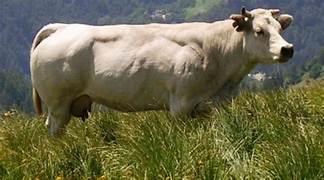
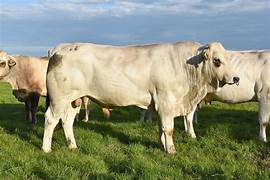

Le mucche da carne possono essere cresciute o in allevamento intensivo oppure tradizionale (estensivo). Nel primo caso, gli animali da carne vengono trattati al pari di oggetti, condizionati da una stabulazione fissa che obbliga i bovini, per natura molto socievoli, a restare fermi in box di ferro, quasi sempre al buio e senza grandi possibilità di muoversi neanche per le deiezioni corporali. Il tipo di alimentazione fornita non è affatto adeguata alle vacche da carne, così come a nessun altro animale da ingrasso: vengono infatti somministrati prodotti di scarto dell'industria panificatrice e dello zucchero, senza contare illegali anabolizzanti e dopanti che spingono l'animale ad aumentare la massa muscolare in maniera non naturale. Di fatto l'allevamento intensivo viola tutte le più scontate norme di tutela alla salvaguardia della specie bovina e alle norme etiche stilate dalla Comunità Europea circa le condizioni di vita degli animali da macello. Situazione completamente diversa avviene, invece, per le mucche da carne tenute in regime di allevamento tradizionale: qui i bovini hanno la possibilità di interagire fra loro, pascolare in libertà e soprattutto di seguire una dieta orientata alla somministrazione di soli alimenti naturali quali fieno, paglia, orzo, avena, mais, crusca, fave. Da questi allevamenti derivano, ovviamente, le migliori carni.
La chianina è una razza bovina italiana delle zone di Arezzo e Siena, un tempo utilizzata come forza motrice e ora allevata esclusivamente per la produzione di carne.
La Piemontese è una razza bovina autoctona del Piemonte originariamente a triplice attitudine. Viene utilizzata oggi principalmente per la carne, in particolare per la presenza di una iperplasia muscolare della coscia, e rappresenta tuttora un elemento caratterizzante del territorio piemontese.
La Marchigiana è una razza bovina tipica della regione Marche. Un tempo utilizzata solo per il lavoro, deriva da incroci di bovini di ceppo Podolico non migliorati, con soggetti di razza Chianina e Romagnola.
